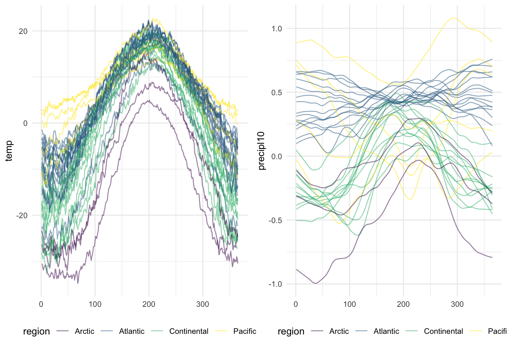

Converting data to tf
Jeff Goldsmith
2019-05-31
Source:vignettes/x02_Conversion.Rmd
x02_Conversion.RmdFunctional data have often been stored in matrices or data frames. Although these structures have sufficed for some purposes, they are cumbersome or impossible to use with modern tools for data wrangling.
In this vignette, we illustrate how to convert data from common structures to tf objects. Throughout, functional data vectors are stored as columns in a data frame to facilitate subsequent wrangling and analysis.
Conversion from matrices
in these, we’ll use tfd to get a tf object from a matrix. This function expects data to be organized so that each row is the functional observation for a single subject.
DTI (from the refund package), with spaghetti plot (this code is used to create the tidyfun::dti_df dataset included in the package. )
dti_df = tibble(
id = refund::DTI$ID,
sex = refund::DTI$sex,
case = factor(ifelse(refund::DTI$case, "MS", "control")))
dti_df$cca = tfd(refund::DTI$cca, arg = seq(0,1, l = 93))
dti_df$rcst = tfd(refund::DTI$rcst, arg = seq(0, 1, l = 55))Make a quick plot
dti_df %>%
ggplot() +
geom_spaghetti(aes(y = cca, col = case, alpha = .2 + .4*(case == "control"))) +
facet_wrap(~ sex) +
scale_alpha(guide = 'none', range = c(.2, .4))
Canadian weather (from the fda package):
canada = tibble(
place = fda::CanadianWeather$place,
region = fda::CanadianWeather$region,
lat = fda::CanadianWeather$coordinates[,1],
lon = -fda::CanadianWeather$coordinates[,2])
canada$temp = tfd(t(fda::CanadianWeather$dailyAv[,,1]), arg = 1:365)
canada$precipl10 =
tfd(t(fda::CanadianWeather$dailyAv[,,3]), arg = 1:365) %>%
tf_smooth
## using f = 0.15 as smoother span for lowessspaghetti – two panels with patchwork to put them together
temp_panel =
canada %>%
ggplot(aes(y = temp, color = region)) + geom_spaghetti()
precip_panel =
canada %>%
ggplot(aes(y = precipl10, color = region)) + geom_spaghetti()
gridExtra::grid.arrange(temp_panel, precip_panel, nrow = 1)
From data frame
… in “long” format
throughout, tf_nest is the key function.
Pig weight, from package SemiPar
data("pig.weights", package = "SemiPar")
pig.weights = as_tibble(pig.weights)
pig.weights
## # A tibble: 432 x 3
## id.num num.weeks weight
## <int> <int> <dbl>
## 1 1 1 24
## 2 1 2 32
## 3 1 3 39
## 4 1 4 42.5
## 5 1 5 48
## 6 1 6 54.5
## 7 1 7 61
## 8 1 8 65
## 9 1 9 72
## 10 2 1 22.5
## # … with 422 more rowspig_df =
pig.weights %>%
tf_nest(weight, .id = id.num, .arg = num.weeks)
pig_df
## # A tibble: 48 x 2
## id.num weight
## <int> <tfd_reg>
## 1 1 1: (1,24);(2,32);(3,39); ...
## 2 2 2: (1,22);(2,30);(3,40); ...
## 3 3 3: (1,22);(2,28);(3,36); ...
## 4 4 4: (1,24);(2,32);(3,40); ...
## 5 5 5: (1,24);(2,32);(3,37); ...
## 6 6 6: (1,23);(2,30);(3,36); ...
## 7 7 7: (1,22);(2,28);(3,36); ...
## 8 8 8: (1,24);(2,30);(3,38); ...
## 9 9 9: (1,20);(2,28);(3,33); ...
## 10 10 10: (1,26);(2,32);(3,40); ...
## # … with 38 more rows
FEV from ALA package (installation is from non-cran):
useful because you can nest multiple functions, if they exist in the dataset
Back to matrices
THINGS BREAK BELOW HERE
wrangling tf-objects inside data frames: tidyr
tidyfun provides tf_ variants of tidyr-verbs to reshape and reformat functional data while keeping it in sync with other covariates:
-
tf_spread:tf\(\rightarrow\) columns for eacharg -
tf_gather:columns for eacharg\(\rightarrow\)tf
# spread tf out into columns for each arg
dti_wide = dti_df %>% tf_spread(cca, arg = seq(0, 1, length = 93))
dti_wide[, 1:7] %>% glimpse()
## Observations: 382
## Variables: 7
## $ id <dbl> 1001, 1002, 1003, 1004, 1005, 1006, 1007,…
## $ sex <fct> female, female, male, male, male, male, m…
## $ case <fct> control, control, control, control, contr…
## $ rcst <tfd_irrg> 1001_1: (0.000,0.26);(0.019,0.45);(0…
## $ cca_0 <dbl> 0.4909345, 0.4721627, 0.5023738, 0.402189…
## $ cca_0.0108695652173913 <dbl> 0.5168018, 0.4868219, 0.5136516, 0.422512…
## $ cca_0.0217391304347826 <dbl> 0.5356539, 0.5022577, 0.5392542, 0.439898…
# collect all columns into a single tf-column
# (... will try to guess arg from column names, name of tf from their prefix)
dti_wide %>% tf_gather(matches("cca_")) %>% glimpse()
## creating new tfd-column <cca>
## Observations: 382
## Variables: 5
## $ id <dbl> 1001, 1002, 1003, 1004, 1005, 1006, 1007, 1008, 1009, 1010,…
## $ sex <fct> female, female, male, male, male, male, male, male, male, m…
## $ case <fct> control, control, control, control, control, control, contr…
## $ rcst <tfd_irrg> 1001_1: (0.000,0.26);(0.019,0.45);(0.037,0.40); ..., 1…
## $ cca <tfd_reg> [1]: (0.000,0.49);(0.011,0.52);(0.022,0.54); ..., [2]: …-
tf_unnest:tf\(\rightarrow\) data in long format (id,arg,value)
-
tf_nest :data in long format (id,arg,value) \(\rightarrow\)tf
# unnest tf by writing 3 loong columns id, arg, value:
# (will try to avoid unnecessary duplication of columns)
dti_long = dti_df %>% tf_unnest(cca); dti_long %>% glimpse()
## Observations: 35,490
## Variables: 7
## $ id <dbl> 1001, 1001, 1001, 1001, 1001, 1001, 1001, 1001, 1001, …
## $ sex <fct> female, female, female, female, female, female, female…
## $ case <fct> control, control, control, control, control, control, …
## $ rcst <tfd_irrg> 1001_1: (0.000,0.26);(0.019,0.45);(0.037,0.40); .…
## $ cca_id <chr> "1001_1", "1001_1", "1001_1", "1001_1", "1001_1", "100…
## $ cca_arg <dbl> 0.00000000, 0.01086957, 0.02173913, 0.03260870, 0.0434…
## $ cca_value <dbl> 0.4909345, 0.5168018, 0.5356539, 0.5553587, 0.5927610,…
# nest tf by writing 3 loong columns id, arg, value:
dti_long %>% tf_nest(cca_value, .id = cca_id, .arg = cca_arg) %>% glimpse()
## Observations: 382
## Variables: 6
## $ cca_id <chr> "1001_1", "1002_1", "1003_1", "1004_1", "1005_1", "100…
## $ id <dbl> 1001, 1002, 1003, 1004, 1005, 1006, 1007, 1008, 1009, …
## $ sex <fct> female, female, male, male, male, male, male, male, ma…
## $ case <fct> control, control, control, control, control, control, …
## $ rcst <tfd_irrg> 1001_1: (0.000,0.26);(0.019,0.45);(0.037,0.40); .…
## $ cca_value <tfd_irrg> 1001_1: (0.000,0.49);(0.011,0.52);(0.022,0.54); .…Note that left/right_join-operations as well as bind_rows do not currently work reliably for tables with tfd or tfb-columns, see tidyfun/issues/53. bind_rows can be easily avoided by using rbind, which still works, instead.